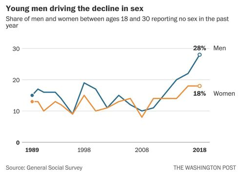
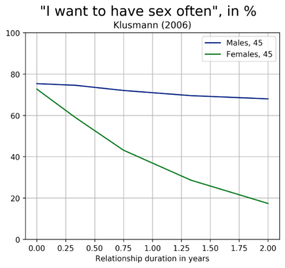

Hypergamy
In scientific literature, hypergamy refers to marrying up in socioeconomic status. It can refer to either men or women, but it is more commonly observed in women.
In the manosphere, the term hypergamy is used more broadly for marrying or dating up and it sometimes refers to dating up relative to a woman's previous partner or relative to other males available, not just herself or the social standing of her family,[1] and it sometimes refers to female mate preferences for socioeconomic status or for the activity of whoring for resources and related instances of female sneakiness. Women are thought to incite one another's hypergamy.
Women's hypergamy is mainly a result of their higher choosiness, higher uniformity of sexual desire, and men's higher sex drive and promiscuity. These differences are thought to have evolved from higher parental investment on part of the female.[2]
As a result of these differences, men have fewer alternative mating options available to them, so they more readily make compromises and date down.[3] Women's preference for high status men ties into the natural hierarchical social organization found in humans.
Causes of hypergamy[edit | edit source]
Choosy, dependent women[edit | edit source]
Historically, women had to invest more into their offspring than men because pregnancy used to be physically risky,[4] and by virtue of having a womb, women had more natural responsibility over children. As a result, women evolved to be choosy and coy and they specialized in childcare and extracting resources from men. This dependency can to some extent also be observed in our closest primate relatives with the males sometimes sharing their food with their mate and their offspring.[2] The amount of resources men provide is quite extreme compared to most animals and unique among primates, with men providing twice as much calories in hunter-gatherers than women and exclusively providing the more nutrient dense meat from hunting, which men used to get mating opportunities and invest into offspring and their mate ever since.[5][6][7] The importance of resources to women is apparent even in egalitarian societies such as the Ache and the Sharanahua, where the best hunters are able to attract the most sexual partners,[8] and also in modern societies, women disdain qualities in men that signal inability to accrue resources, such as lack of ambition (d = 1.38).[9] As men are held more responsible economically, more men than women are expected to completely fail in life due to Matthew effects. As women avoid such loser males due to their thirst for resources and status in men, it means women tend to date up.
Principle of least interest[edit | edit source]
In unregulated dating markets and even though physically weaker, women turn out to be the chief sexual selectors and gatekeepers of sex due to the principle of least interest: When an activity depends on mutual agreement, the person with the least interest decides the terms of that activity.[10] This is because the person with the most interest has fewer options, thus they more likely compromise than the other party to reach an arrangement. Women desire initiating sex with a partner of average attractiveness much less than men.[11][12] Thus, most men have few mating options and hence more likely make compromises in order to get any sex at all.[13] Making compromises means dating down, which in turn means women date up.
Pussy cartel[edit | edit source]
In terms of sexual economics theory, women sexually commodify themselves with a certain exchange value whenever they sexually reject or accept men based on their resources. Sex then becomes a resource itself that men can purchase by amassing a broad array of valued goods, including non-monetary resources such as fame and competence.[14] Women compete in "selling high" by strategically withholding sex, thereby increasing men's sexual frustration, thus inflating the "price" of sex and baiting men into engaging in more committed resource provision, even when there is an abundance of resources in society. Women are also believed to slut-shame one another to maintain the value of sex, as sex given away for free lowers the value of sex, which reduces women's leverage over men.[15] In this manner, women collude, forming pussy cartels, and inciting one another's hypergamy. By having men work for them, women become a leisure class.
Polygamy[edit | edit source]
Humans and most primates are moderately polygynous species, meaning that some males monopolize multiple females. In fact, the vast majority (84.6%) of historical societies had at least some polygynous marriages.[16] Assuming there was no significant shortage of men, polygyny meant high status men drew from the mate pool of men of equal or lower status men than themselves. Thus, lower status men went empty-handed or were urged to date less desirable women still available, so their female equals could date up on average, i.e. could marry hypergamously. As polygyny was a highly prevalent mode of mating in human history, one would expect mate preferences to evolve in human females that make use of opportunities to marry up and polygynously, that is, along with already mentioned selection pressures from women's need to get resources (resource dependence) and to be protected as the physically and emotionally weaker sex (bodyguard hypothesis).
Relation to female submission[edit | edit source]
Female hypergamy is related to ancient courtship adaptations in which pair formation only succeeds when the male is able to dominate the female, a behavior that can be observed in many reptiles, birds, and mammals.[17][18] In the ancient context, power was largely decided by brute force, whereas in modern humans it is more about resources. Modern resource hypergamy can, hence, be seen as a more k-selected version of the ancient testing for physical power. Analogously, there is resource-defense and mate-defense polygyny.[19] Human females still appear to use the same adaptations of sexual submission (lordosis posture) from the mate-defense context to attain access to resources in the modern resource-defense context, e.g. by wearing high heels.[20]
Women want poor men to die in a fire[edit | edit source]
Women's behavior in online dating is particularly useful for revealing their preference for dating up and against dating down: One study showed female users 'like' male user profiles with a higher education status than their own twice as often when compared to a profile with equal education status, and they like user profiles with lower status only half as often.[21] The IFS found women are twice as likely to marry up in income when they marry down in education.[22] In the Swedish top 1% income bracket, 70% of men, but only 30% of women, are partnered with someone in the bottom 90% bracket.[23] Job promotion increases the likelihood of a relationship breakup more in women than in men.[24] According to a study by Guanlin Wang, women are 1,000 times pickier about a potential partner's wealth than men. The authors of the study speculate that women's preference for affluent men poses a barrier in encouraging males to adopt a low-consumption lifestyle and thus a barrier in solving ecological crises.[25]
Women also rate men with cues of wealth (e.g. presentation of luxury goods) as more sexually attractive, while men don't care about this when rating women.[26] People pay more attention to photos of men with high status attire, but not to women with high status attire.[27][28] Men's social status also accounts for 62% of the variance of frequency of copulation opportunities (though it is less related to men's reproductive success).[29] Men's income was found to be positively correlated with their partner's orgasms and negatively with sexlessness.[30][31] Women's promotion increased the risk of divorce,[32][33] and aversion to having the wife earn more than the husband explains 29% of the decline in marriage rates over the last thirty years.[34] Women dating up in education and socioeconomic status is a robust pattern across many online dating studies.[35] One study found that while relationship quality was negatively associated with the woman earning more, they did not find power differentials (in terms of income or education) to affect the likelihood of women's divorce initiation,[36] however, reported relationship quality generally is not very predictive of divorce risk.[37]
Evidently, men with a relatively lower socioeconomic compared to women's status is regarded as red flag even though there is no risk of starvation in modern Western welfare states. In the wild, men with lower status than women would likely be complete failures, but today, this can be explained by women having been artificially elevated into a higher social status and/or that men have been left behind, which can be regarded as an evolutionary mismatch.
Source OkCupid.[38]
Intensifying hypergamy[edit | edit source]
Rising male sexlessness[edit | edit source]

Substantial evidence of increased hypergamy is the rise of inceldom, which affects both sexes, but men more than women.[39] The share of men under 30 who aren't having sex has possibly tripled in the past decade according to the Washington Post using data from the General Social Survey.[40]
More evidence is that the top 5-20% of men are having more sex than ever before. The data from the 2002 and 2011–2013 National Survey of Family Growth, a US household survey focusing on sexual and reproductive health can demonstrate this.[41][42][43][44] The researchers found that compared to 2002, men overall had the same number of partners in 2013. However, the top 20% of men had a 25% increase in sexual partners. The top 5% of men had an outstanding 38% increase in the number of sexual partners. Thus while the amount of male sex that was had was unchanged, more of the sex was consolidated into extra sex for the top 5-20% of men (i.e., "Chads"). Thus Chads are truly having more sex than ever before. Below are direct quotes from the study:
- Although we found no change in median numbers of sex partners [for men], we found significant increases in the numbers of sex partners reported by the top 5% and 20%.
- We found an overall statistically significant increase in reported lifetime opposite-sex sex partners overall for men in the top 20% from 12 in 2002 to 15 in 2011–2013 (95% CIs, 11–14 and 15–15, respectively).
- Similarly, there was a statistically significant overall increase in reported lifetime partners for men in the top 5% from 38 in 2002 to 50 in 2011–2013 (95% CIs, 30–40 and 50–50, respectively).
Women surpassing men[edit | edit source]
There are indications that both male and female inceldom is partially born from college educated women and the like. Technology and liberalism have allowed more women to enter the workforce and surpass men in educational and socioeconomic status, hence rendering more men unattractive to women due to women's hypergamous preference to date up. This has possibly resulted in an increase in male inceldom, but also female singlehood, in fact high status women are frequently observed to prefer singlehood over dating down.[45][46][47][48][49][50][51] What is more, women more readily continue to provide sex in a long-term relationship when they are economically dependent on the man,[52] which may suggest they hand out sex to ensure continued investment. Independent women have thus less need to give sex to anyone and may refrain from sex entirely. As such, their unusual independence poses an evolutionary mismatch.
This is not only bad for men, but also for women, as they too suffer from more loneliness and sexual deprivation[53] when strong men who sexually satisfy them become rarer, since clearly not all women then can find a satisfying partner and rather stay lonely. In fact, women have become less orgasmic with the sexual revolution,[54] which may be due to a lower prevalence of strong, confident men who mog them regarding income.
Buss et al. summarized women's tendencies to switch mates when rising in social status:
Women whose mate value increases substantially will become (1) more emotionally dissatisfied with their current partner, (2) more likely to evade a partner's mate guarding efforts, (3) more likely to cultivate backup mates, (4) more likely to initiate new relationships with higher mate value men, and (5) less inclined to stay with their current partners.[55]
Online dating and social media[edit | edit source]
Sexually frustrated men and the abundance of them in online dating and social media, likely also intensify hypergamy: Frustrated men aim down more, which inflates women's self-esteem and gives them hope of securing a mate with exceptional high mate value, so they become even more choosy and date up more or show decision fatigue which creates even more sexually starved men, forming a negative feedback loop.[56] Growing economic inequality and decreasing economic growth likely have the same effect as fewer men can attain reliable high status, which is what women go for.[57][58][59]
Marriages are falling apart[edit | edit source]

There are other indications of intensified hypergamy besides the rise of singlehood and sexlessness, namely less stable relationships. With the decline of marriage norms, greater acceptance of polygamy[60] and divorce laws that greatly benefit women, women more readily jump ship when a better man is available. This can be seen in women initiating divorces more often than men and a closing gender gap in infidelity,[61] despite the fact that men oppose their partner's infidelity much more strongly.[62][63] Women appear to have a fundamental anxiety about not having made the ideal partner choice in terms of wealth and power and no-fault divorce laws and other institutions and norms that facilitate mate switching satisfy this female desire.
Cock Carousel[edit | edit source]
The increase in single motherhood, and a higher rate of childless men,[64] likely also points to hypergamy as a minority of men engages in serial monogamy (i.e. remarries often) which is de facto polygamy. Single motherhood may also come from riding the "cock carousel" too much. Young women chase the 666 rule and then turn bitter when they have to settle with an ugly betabux, and so end up lonely with their kids. The fact that they've been "pumped and dumped" is evidence that these women have aimed excessively high and carelessly, i.e. that their high SMV men lost interest due to their plentiful better options (backburners), especially after the woman hits the wall. Women are known to turn bitter towards other men once rejected by a high SMV man.[65]
Sexual inequality[edit | edit source]
80/20 Rule[edit | edit source]
The 80/20 rule, or "Pareto principle", comes from economics and refers to the observation that inequality often approaches a distribution where the 20% richest own 80% of the wealth due to the Matthew effect, i.e. due to success breeding success and the unsuccessful tending to find themselves in a downward spiral. In case of the sexual market, wealth means the number of sex partners.
Pareto used his laws in attempts to prove that social darwinism was necessary to "eliminate" undesirables (which he referred to as "toxins").[66][67] However, these laws have yet to be proven unchanging or inevitable. In other words, the "80/20" rule is a certain model of how inequality can manifest, but it does not prove that things will always be as severely unequal. Some economists, take less extreme positions and merely use such models to argue that some inequality is inevitable.[68]
Many incels perceive their inceldom to be caused by the 20% most dominant men hoarding 80% of the females, which is a somewhat exaggerated view of the facts, except perhaps for a few subcultures and online dating platforms with very unequal sexual markets. For this reason, many incels rather use 80/20 as a meme to warn of the damaging effects of our current dating scene and increased competitiveness in online dating, knowing reality may not be as unequal (yet).
An internal OkCupid study from 2009 revealed that women irrationally evaluate 80% of men, brave enough to show their mug on a public website, as below medium (below 5/10).[69] Many people mistook this as evidence of 80/20 in the sex market, but the 80 figure is just coincidental, and it actually is only evidence of female choosiness and coyness without information how look ratings convert into sexual success. OkCupid deleted this study after the Alek Minassian attack, which some incels understood as attempt to hide or downplay substantial inequalities in the sexual market, and hence evidence of their existence.
Besides the share of wealth of the top 20%, another measure of inequality is the GINI coefficient which measures how much the distribution of wealth deviates from equal distribution with a GINI of 0 meaning equal distribution. A study analyzing GINI coefficients in human relationships found that “single men have a higher Gini coefficient (.536) than single women (.470). Thus, female sexual partners are more unequally distributed among single men than male sexual partners are among single women”.[70] This roughly corresponds to the top 20% men having 60% of the sex, so 60/20, and 56/20 for women i.e. less extreme than 80/20, in the general population at least.[71] Mark Regnerus estimated the distribution to be 70/20 for men older than 25.[72] Data from GSS also suggests it is around 68/20 for men and a bit less unequal, 59/20 for women.[citation needed] A study found that Tinder's GINI coefficient for men was comparable with the income inequality of third-world countries (see chart below).[73] A data scientist for Hinge reported on the Gini coefficients he had found in his company’s abundant data, treating “likes” as the equivalent of income. He reported that heterosexual females faced a Gini coefficient of 0.324, while heterosexual males faced a much higher Gini coefficient of 0.542. While the situation for women is something like an economy with some poor, some middle class, and some millionaires, the situation for men is closer to a world with a small number of super-billionaires surrounded by huge masses who possess almost nothing. According to the Hinge analyst:
On a list of 149 countries’ Gini indices provided by the CIA World Factbook, this would place the female dating economy as 75th most unequal (average—think Western Europe) and the male dating economy as the 8th most unequal (kleptocracy, apartheid, perpetual civil war—think South Africa.[74]
Sexologist Kristin Spitznogle regards the slightly higher inequality among men as evidence of Bateman's principle in modern western societies.[75] In ancient societies, the sexual markets were likely stacked much more against men, with men only reproducing half as often as women and men outnumbering women 1:10 in the lowest social classes (see the quote by Orwell below). More inequality in reproductive success among men has been found in 94% of human societies that were considered in a 2009 study.[76] Matthew effects operating on sexual success, and skewing the distribution of sex to be unequal, especially in case of males, is evidenced by the fact that, cross-culturally, male sex havers are regarded as winners and male virgins as losers.[77] The reverse applying to women is known as the "double standard" in mating. Men's sexual success is also more tied to their socioeconomic standing as discussed in this article, and this in turn is also known to be subject to Matthew effects.
George Orwell on hypergamy[edit | edit source]
The famous English writer and socialist, George Orwell, poignantly wrote about male poverty and homelessness frequently being concomitant with inceldom due to female hypergamy, in his famous novel about the underclass, Down and Out in Paris and London:
Tramps are cut off from women, in the first place, because there are very few women at their level of society. One might imagine that among destitute people the sexes would be as equally balanced as elsewhere. But it is not so; in fact, one can almost say that below a certain level society is entirely male. The following figures, published by the L.G.C. from a night census taken on February 13th, 1931, will show the relative numbers of destitute men and destitute women:
Spending the night in the streets, 60 men, 18 women.
In shelters and homes not licensed as common lodging-houses, 1,057 men, 137 women.
In the crypt of St Martin’s-in-the-Fields Church, 88 men, 12 women.
In L.C.C. casual wards and hostels, 674 men, 15 women.
It will be seen from these figures that at the charity level men outnumber women by something like ten to one. The cause is presumably that unemployment affects women less than men; also that any presentable woman can, in the last resort, attach herself to some man. The result, for a tramp, is that he is condemned to perpetual celibacy. For of course it goes without saying that if a tramp finds no women at his own level, those above - even a very little above - are as far out of reach as the moon. The reasons are not worth discussing, but there is little doubt that women never, or hardly ever, condescend to men who are much poorer than themselves. A tramp, therefore, is a celibate from the moment when he takes to the road. He is absolutely without hope of getting a wife, a mistress, or any kind of woman except — very rarely, when he can raise a few shillings — a prostitute.
It is obvious what the results of this must be: homosexuality, for instance, and occasional rape cases. But deeper than these there is the degradation worked in a man who knows that he is not even considered fit for marriage. The sexual impulse, not to put it any higher, is a fundamental impulse, and starvation of it can be almost as demoralizing as physical hunger. The evil of poverty is not so much that it makes a man suffer as that it rots him physically and spiritually. And there can be no doubt that sexual starvation contributes to this rotting process. Cut off from the whole race of women, a tramp feels himself degraded to the rank of a cripple or a lunatic. No humiliation could do more damage to a man’s self-respect.
—George Orwell, Down and Out in Paris and London, 1933[78]
Meme gallery[edit | edit source]
- HypergamyPill.jpg
See Wizard and Beta uprising.
References[edit | edit source]
- ↑ https://www.amazon.com/Rational-Male-Rollo-Tomassi/dp/1492777862
- ↑ 2.0 2.1 Mogielnicki C, Pearl K. 2020. Hominid sexual nature. [Article]
- ↑ https://assets.csom.umn.edu/assets/71503.pdf
- ↑ The maternal death rate used to be 1 in 100 births, but in modern societies it is around 10 / 100,000, so a hundred times lower. https://en.wikipedia.org/wiki/Maternal_death#cite_note-47
- ↑ https://www.sciencedirect.com/science/article/pii/S016748701630277X
- ↑ https://www.sciencedirect.com/science/article/abs/pii/S1090513810000279
- ↑ https://incels.wiki/w/Scientific_Blackpill_(Supplemental)#In_hunter-gatherers.2C_men_use_meat_to_obtain_mating_opportunities_and_to_invest_in_mates_and_offspring
- ↑ https://pdfs.semanticscholar.org/bbf7/77fbe21100d32ebd55a41b65de7151628235.pdf (Cashdan 1996)
- ↑ https://www.researchgate.net/profile/David_Buss/publication/15471658_Psychological_Sex_Differences_Origins_Through_Sexual_Selection/links/0deec5181791b421a4000000.pdf
- ↑ Waller & Hill, 1951
- ↑ https://www.sciencefriday.com/wp-content/uploads/2016/04/gender-differences-in-receptivity-to-sexual-offers.pdf
- ↑ https://incels.wiki/w/Scientific_Blackpill#Men_like_61.9.25_of_female_profiles.2C_women_like_only_4.5.25_of_male_profiles
- ↑ https://assets.csom.umn.edu/assets/71503.pdf
- ↑ https://www.sciencedirect.com/science/article/pii/S016748701630277X
- ↑ Baumeister & Twenge, 2002
- ↑ Grey, JP. 1998. Ethnographic Atlas Codebook, derived from George P. Murdock's Ethnographic Atlas recording the marital composition of 1231 societies from 1960 to 1980. [Article]
- ↑ Eibl-Eibesfeldt I. 1989. Pair Formation, Courtship, Sexual Love. In: Human Ethology. Rougtledge. [Excerpt]
- ↑ Eibl-Eibesfeldt I. 1990. Dominance, Submission, and Love: Sexual Pathologies from the Perspective of Ethology. In: Feierman, J. R. (ed.): Pedophilia. Biosocial Dimensions. Springer-Verlag, New York, 1990 151-175. [Abstract]
- ↑ https://www.jstor.org/stable/3565861
- ↑ https://link.springer.com/article/10.1007/s40806-017-0123-7
- ↑ https://incels.wiki/w/Scientific_Blackpill#Men_like_61.9.25_of_female_profiles.2C_women_like_only_4.5.25_of_male_profiles
- ↑ https://ifstudies.org/blog/better-educated-women-still-prefer-higher-earning-husbands
- ↑ https://www.sciencedirect.com/science/article/pii/S004727271930177X
- ↑ http://www.ifn.se/wfiles/wp/wp1146.pdf
- ↑ https://incels.wiki/w/Scientific_Blackpill#Women_are_1.2C000x_more_sensitive_than_men_to_economic_status_cues_when_rating_attractiveness
- ↑ http://doi.org/10.1556/JEP.12.2014.1.1
- ↑ https://incels.wiki/w/Dominance_hierarchy#Eye_contact
- ↑ https://incels.wiki/w/Scientific_Blackpill_(Supplemental)#Women_.28and_men.29_pay_more_attention_to_high_status_men.2C_not_high_status_women
- ↑ https://doi.org/10.1017/S0140525X00029939
- ↑ https://www.sciencedirect.com/science/article/abs/pii/S1090513808001177
- ↑ https://cnnespanol2.files.wordpress.com/2012/10/polletandnettle-orgasms.pdf?attredirects=1
- ↑ http://www.ifn.se/wfiles/wp/wp1146.pdf
- ↑ https://doi.org/10.1007/s10508-017-0968-7
- ↑ https://doi.org/10.1093/qje/qjv001
- ↑ https://boris.unibe.ch/72034/1/paper_HICCS_final(1).pdf See table 4
- ↑ https://web.stanford.edu/~mrosenfe/Rosenfeld_gender_of_breakup.pdf
- ↑ Vaughan’s (1990)
- ↑ https://theblog.okcupid.com/the-big-lies-people-tell-in-online-dating-a9e3990d6ae2?gi=40665f8d2354 [Archive.is]
- ↑ https://incels.wiki/w/Demographics_of_inceldom#Growth_in_Numbers
- ↑ https://www.washingtonpost.com/business/2019/03/29/share-americans-not-having-sex-has-reached-record-high/?utm_term=.9b52429c7136
- ↑ https://incels.wiki/w/Scientific_Blackpill#The_top_5-20.25_of_men_.28ie._.22Chads.22.29_are_now_having_more_sex_than_ever_before
- ↑ Harper CR, Dittus PJ, Leichliter JS, Aral, SO. Changes in the Distribution of Sex Partners in the United States: 2002 to 2011–2013 Sexually Transmitted Diseases: February 2017 - Volume 44 - Issue 2 - p 96–100. doi: 10.1097/OLQ.0000000000000554
- ↑ https://journals.lww.com/stdjournal/Fulltext/2017/02000/Changes_in_the_Distribution_of_Sex_Partners_in_the.5.aspx
- ↑ https://incels.is/threads/science-confirms-compared-to-last-decade-women-putting-out-only-for-chad.42066/
- ↑ https://www.dailymail.co.uk/news/article-6004239/High-flying-career-women-refusing-marry-despite-struggling-Mr-Right.html
- ↑ https://www.edge.org/response-detail/26747
- ↑ https://incels.wiki/w/Scientific_Blackpill_(Supplemental)#Women_lose_mating_opportunities_with_higher_status.2C_men_gain_mating_opportunities
- ↑ https://doi.org/10.1093/qje/qjv001
- ↑ https://fee.org/articles/why-single-women-are-way-more-likely-to-own-a-home-than-single-men/
- ↑ https://newsroom.wiley.com/press-release/journal-marriage-and-family/do-unmarried-women-face-shortages-partners-us-marriage-mar
- ↑ https://onlinelibrary.wiley.com/doi/10.1111/jomf.12603
- ↑ https://incels.wiki/w/Scientific_Blackpill#Women_rapidly_lose_interest_in_sex_once_in_a_stable_relationship_or_living_with_a_man
- ↑ https://incels.wiki/w/Scientific_Blackpill#Health
- ↑ https://www.researchgate.net/publication/319414654_An_Evolutionary_Perspective_on_Orgasm
- ↑ https://labs.la.utexas.edu/buss/files/2013/02/The-Mate-Switching-Hypothesis-FINAL-PUBLISHED-2017.pdf
- ↑ https://www.technologyreview.com/s/601909/how-tinder-feedback-loop-forces-men-and-women-into-extreme-strategies/
- ↑ https://journals.openedition.org/chs/737
- ↑ http://ftp.iza.org/dp4456.pdf
- ↑ https://incels.wiki/w/Scientific_Blackpill#Women_sexualize_themselves_online_to_attract_high_status_mates
- ↑ https://news.gallup.com/opinion/polling-matters/214601/moral-acceptance-polygamy-record-high-why.aspx
- ↑ http://www.fincham.info/papers/2017-infidelity.pdf
- ↑ http://www.dailymail.co.uk/news/article-2196146/Why-affairs-unforgivable-Six-women-forgive-partner-strayed-twice.html
- ↑ http://journals.sagepub.com/doi/abs/10.1177/1745691617698225
- ↑ https://sciencenorway.no/childlessness-fathers-forskningno/a-quarter-of-norwegian-men-never-father-children/1401047
- ↑ https://incels.wiki/w/Scientific_Blackpill#Women_bitterly_reject_unattractive_men_after_facing_rejection_themselves_by_an_attractive_man
- ↑ http://www.paecon.net/PAEReview/issue80/Flomenhoft80.pdf
- ↑ https://books.google.com/books?id=zg91TAIs6bgC&pg=PA155&lpg=PA155&dq="which+will+promptly+perish+if+prevented+from+eliminating+toxins"
- ↑ https://www.scientificamerican.com/article/is-inequality-inevitable/
- ↑ https://theblog.okcupid.com/your-looks-and-your-inbox-8715c0f1561e?gi=5b9f2efd0843 [Archive.is]
- ↑ https://contexts.org/blog/who-has-how-many-sexual-partners/
- ↑ https://en.wikipedia.org/wiki/Pareto_distribution#Lorenz_curve_and_Gini_coefficient
- ↑ https://books.google.de/books?id=928uDwAAQBAJ&pg=PA86&lpg=PA86&dq=%22Pareto+would+be+proud,+or+nearly+so%22&source=bl&ots=jErxDCkmJ4&hl=en&sa=X#v=onepage&q=%22Pareto%20would%20be%20proud%2C%20or%20nearly%20so%22&f=false
- ↑ https://medium.com/@worstonlinedater/tinder-experiments-ii-guys-unless-you-are-really-hot-you-are-probably-better-off-not-wasting-your-2ddf370a6e9a
- ↑ https://quillette.com/2019/03/12/attraction-inequality-and-the-dating-economy/
- ↑ https://resett.no/2018/06/29/menn-i-ufrivillig-solibati/
- ↑ Brown, G.R., Laland, K.N. and Mulder, M.B. 2009. Bateman's principles and human sex roles. [FullText]
- ↑ https://digitalcommons.humboldt.edu/cgi/viewcontent.cgi?article=1008&context=senior_comm
- ↑ Orwell, G. 1933. Down and Out in Paris and London. Chapter XXXVI. FullText